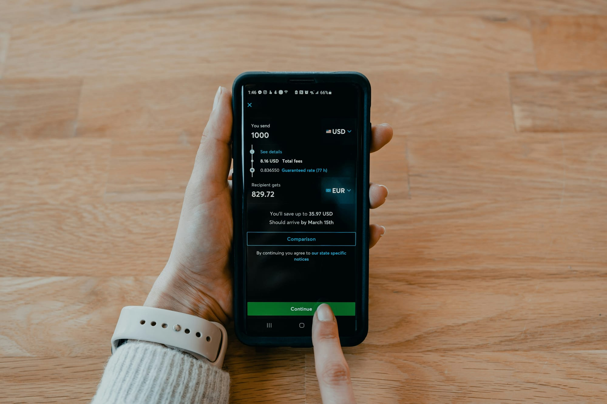

Best Apps to Save Money Automatically in 2026
The best apps to save money automatically in 2026, tested. Round-ups, auto-transfers, and the ones that quietly build savings without you noticing.
Z Zar · 23 Apr 2026 — 5 min read

📚 Part of our Budget & Debt Guide
The best savings strategy is one that removes the decision entirely. When saving is automatic, it happens. When it requires a monthly decision, it often does not.
In 2026 there are apps that analyze your spending, predict when you can afford to save, and move money to savings automatically — without you lifting a finger after the initial setup.
Why Automatic Saving Works
The gap between people who save consistently and people who do not is rarely income. It is system design.
People who save consistently have systems that make saving the default behavior. People who struggle to save rely on willpower and good intentions — both of which are finite and unreliable.
Automatic saving apps eliminate willpower from the equation entirely.
The Best Automatic Saving Apps in 2026
1. Digit — Best AI-Powered Automatic Saving
Digit is the most sophisticated automatic saving app available. It analyzes your income, spending patterns, and account balances daily, then automatically transfers small amounts to savings when it determines you will not miss them.
The algorithm considers your upcoming bills, recent spending, and average balance before making each transfer. Most users report that Digit moves $150-400/month to savings without them noticing.
How to Stack Automatic Saving Apps
The most effective approach combines multiple tools:
Foundation: Chime or Ally for automatic percentage-of-paycheck saving (free)
Build the Habits Behind the Apps
I Will Teach You to Be Rich
by Ramit Sethi
The original guide to automating your entire financial life: savings, bills, investments. The apps have changed but the framework is timeless.
How it works: Link your checking account. Set your savings goals. Digit analyzes your finances daily and makes automatic transfers — typically $5-35 at a time — when your balance can absorb them comfortably.
Features:
- Goal-based saving — vacation, emergency fund, down payment
- Automatic overdraft protection — pauses saving if balance gets low
- Earn a small savings bonus (0.10% annually)
- Pause anytime with one tap
Price: $5/month after a 30-day free trial
Best for: People who cannot consistently save manually but want savings to happen automatically.
2. Qapital — Best for Rule-Based Saving
Qapital lets you set specific rules that trigger automatic savings. The rules-based approach makes saving feel like a game rather than a sacrifice.
Popular rules:
Round-up rule: Round every purchase to the nearest dollar and save the difference. Spend $4.60 on coffee — $0.40 goes to savings.
Guilty pleasure rule: Every time you spend at a specific "guilty pleasure" merchant — Starbucks, Amazon, fast food — automatically save a fixed amount.
Spend less rule: Set a weekly spending limit in a category. If you spend less than the limit, automatically save the difference.
Freelancer rule: Save a fixed percentage of every deposit above a threshold — ideal for variable income.
Price: $3-12/month depending on plan
Best for: People who want creative, customizable rules that align saving with specific spending behaviors.
3. Acorns — Best for Investing Spare Change
Acorns rounds up every purchase to the nearest dollar and invests the spare change in a diversified portfolio. Unlike other apps that move money to savings, Acorns invests it — providing long-term growth potential beyond standard savings rates.
How it works: Link your credit and debit cards. Every purchase is rounded up. When round-ups reach $5, the amount is invested in your chosen Acorns portfolio — ranging from conservative (bonds) to aggressive (stocks).
Additional features:
- Recurring investments — add a fixed weekly or monthly contribution
- Acorns Later — IRA account for retirement savings
- Acorns Early — custodial account for children
- Earn investments — cashback as investments from partner brands
Price: $3/month (personal), $5/month (family)
Best for: Beginners who want the simplest possible introduction to investing with no minimum and no decisions beyond the initial setup.
4. Chime Automatic Savings — Best Free Option
Chime's automatic savings features are built into their free checking and savings account combo — no additional app required and no monthly fees.
Features:
- Save When I Get Paid: Automatically transfer a percentage of every direct deposit to savings
- Round-Ups: Round every debit card purchase to the nearest dollar and save the difference
- High-yield savings account: 2.00% APY on savings balance
Price: Free — included with Chime account
Best for: People who want automatic saving without paying an additional monthly fee.
5. Ally Savings Buckets — Best for Goal-Based Saving
Ally Bank's savings account includes Savings Buckets — up to 30 separate virtual savings buckets within one account, each with its own goal and automatic contribution schedule.
Create buckets for emergency fund, vacation, car maintenance, holiday gifts, and anything else. Set automatic monthly transfers to each bucket. Watch each goal progress independently.
Why it works: Named, goal-specific savings accounts are psychologically more protected than undifferentiated savings. You are less likely to raid a "Car Repair Fund" for a non-emergency than a generic savings account.
Price: Free — included with Ally savings account (4.40% APY)
Best for: Goal-oriented savers who want multiple savings goals running simultaneously.
Layer 2: Acorns for investing spare change ($3/month)
Layer 3: Digit or Qapital for additional AI-powered or rule-based saving ($3-5/month)
Total cost: $6-8/month for a complete automatic saving ecosystem that most users report saves $300-600/month more than they saved manually.
What to Do With Automatically Saved Money
Automatic saving apps typically move money to low-yield savings. Once you have accumulated a meaningful amount, transfer to higher-yield vehicles:
- Emergency fund: High-yield savings account (4.5%+ APY)
- Short-term goals: Money market account
- Long-term goals: Index fund investments
The automatic saving apps are the collection mechanism. The high-yield accounts and investments are where the money grows.
The Bottom Line
Automatic saving is not about discipline. It is about system design.
Download Chime or Acorns today — both are free to start. Link your account. Set the round-up feature. Walk away.
In 30 days check your savings balance. Most people are surprised by how much accumulated without any conscious effort.
That is the point.
Automating your savings is one half of the equation — the other is earning on money you already spend. Our guide on the best ways to use credit card rewards in 2026 shows how to stack cashback on top of these apps.
Want to go deeper on this? See Best Ways to Save Money on Subscriptions in 2026.
Want to go deeper on this? See The 50/30/20 Budget Rule Explained (And How to Make It Work for You).
For the full breakdown, read Best High-Yield Savings Accounts in 2026 (Earn 10x More on Your Money).
Want to go deeper on this? See How to Build a $1,000 Emergency Fund Fast (Even on a Tight Budget).
📥 Free download: The 10-Step Financial Independence Checklist
The exact roadmap I followed to build my financial foundation. 6 pages, professionally designed, free, no email required.